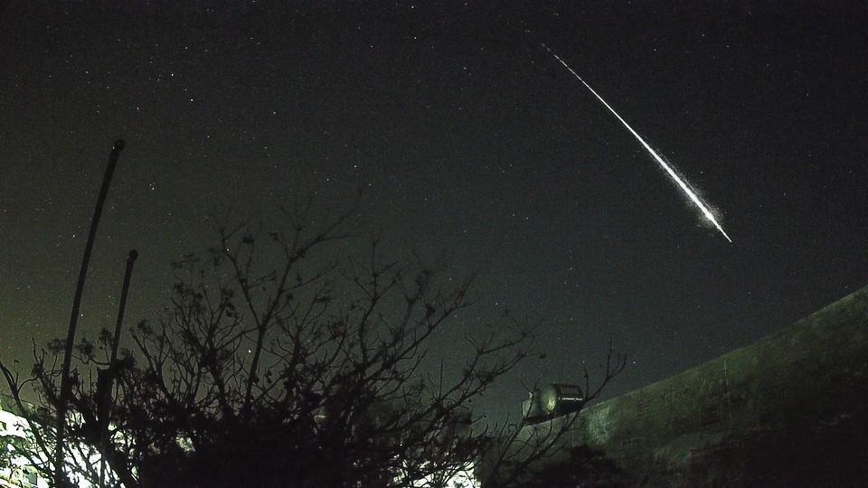
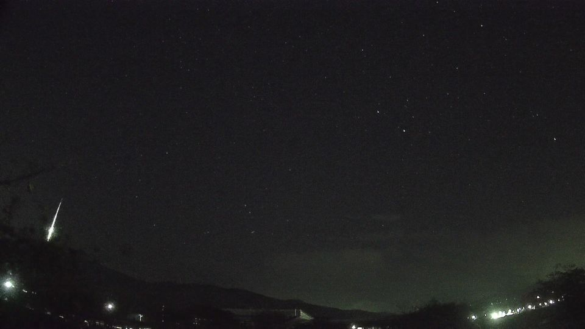
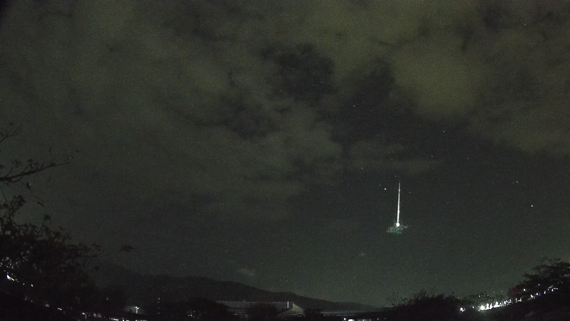
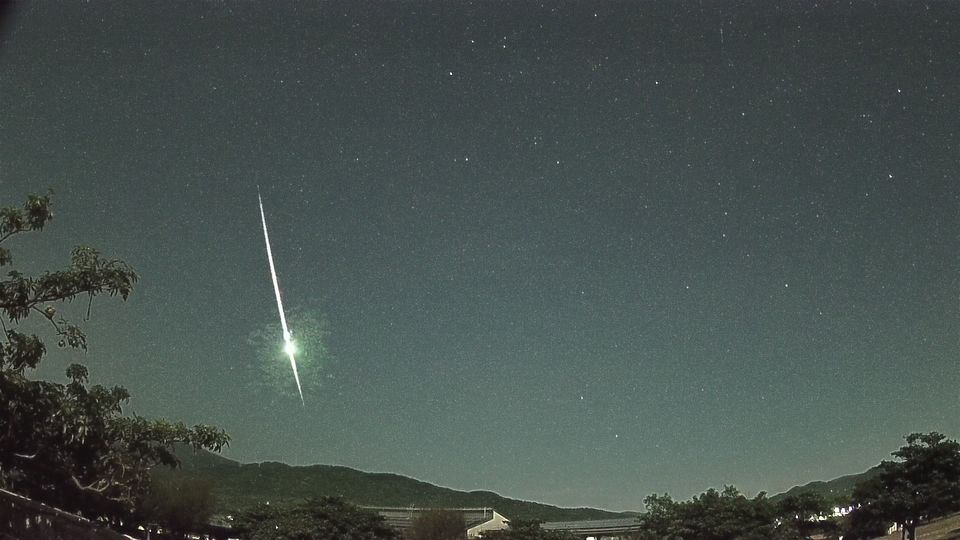

2026 年（10 顆）

11 月 22 日（日）01:082026 年
看這一顆 →
11 月 19 日（四）04:342026 年
這批裡最亮的一顆：最後爆成一大團，照亮了旁邊的雲。
看這一顆 →
11 月 19 日（四）02:102026 年
很長的一條，三台攝影機都拍到，留下餘跡。
看這一顆 →
11 月 18 日（三）19:272026 年
剛入夜，最後爆亮一下。
看這一顆 →
11 月 18 日（三）05:272026 年
天快亮的時候，又短又快。
看這一顆 →
11 月 17 日（二）02:162026 年
穿過碎雲，途中突然增亮。
看這一顆 →
11 月 10 日（二）23:492026 年
很低的北方天空，越到後面越亮。
看這一顆 →
11 月 8 日（日）23:162026 年
看這一顆 →
9 月 26 日（六）01:222026 年
又慢又長，快結束時爆亮一下，帶著綠色光暈。
看這一顆 →
8 月 12 日（三）20:132026 年
最後爆成一顆帶星芒的光球後消失。
看這一顆 →